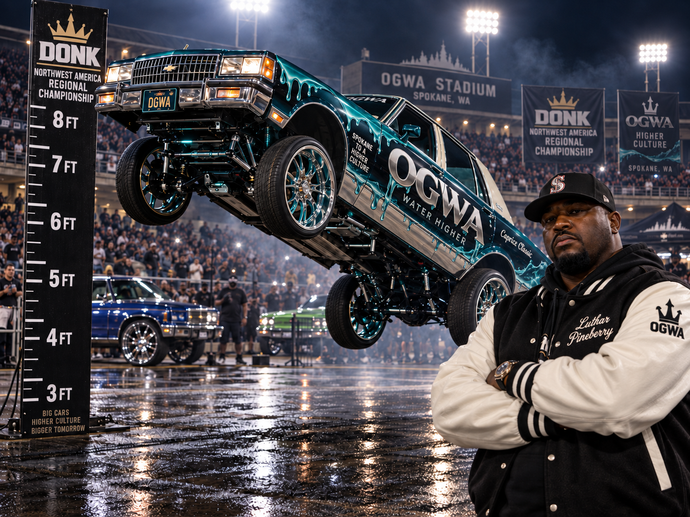
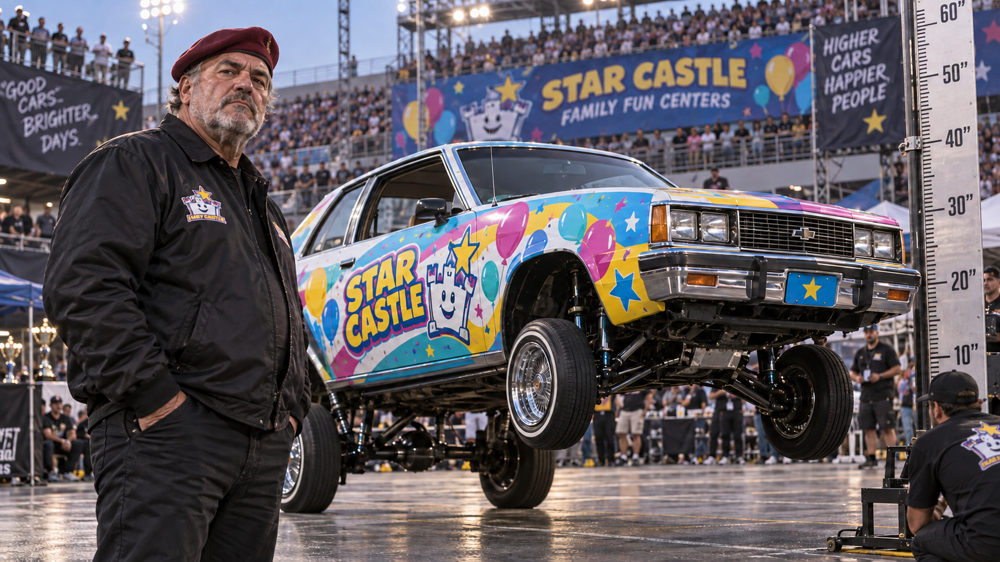

DONK operates independently of Global League Baseball. Under a venue agreement, selected circuit events are staged at GLB parks after the baseball schedule clears. Competition is divided into separate disciplines; a driver may win a category without winning the event.

Driver Entry · Spokane Regional
Luthar Pineberry
Pineberry campaigns an OGWA-branded 1986 Chevrolet Caprice Classic. The sea-glass paint, chrome, and water-drip graphics remain visible until the hydraulics engage.
Height runs at OGWA use a fixed measuring rig positioned beside the competition lane. The reading is recorded in inches.

Driver Entry · Spokane Regional
Vic Katz
Katz campaigns a 1985 Chevrolet Citation for Star Castle Family Fun Centers, a locally owned party-rental company supplying inflatable castles, bounce houses, folding tables, yard signs, and concession machines across the Spokane area.
The Citation carries balloons, chrome stars, confetti, and the smiling Star Castle mascot. Katz wears the matching patch on a black jacket. No alternate jacket has been observed.
GLB’s venue announcement included statements from the league, DONK, and OGWA. The Spokane Alloys were not quoted.
DONK SUPREME
The circuit championship and its highest competitive title. Regional results determine qualification.
View 2025 DONK Regionals →